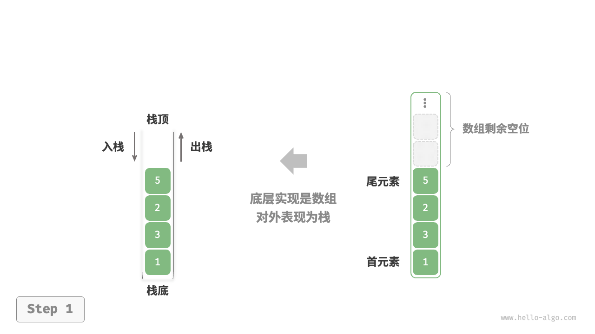
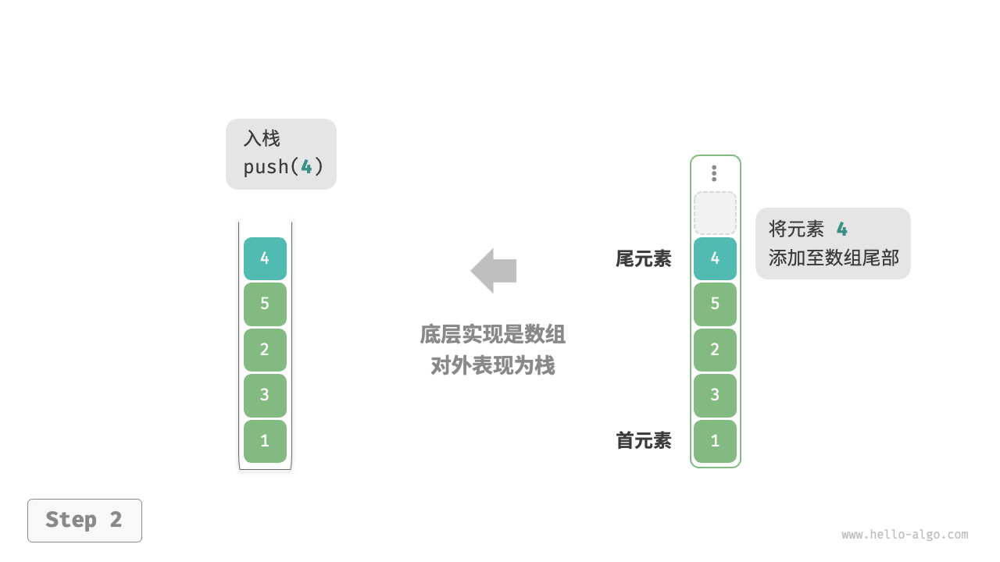
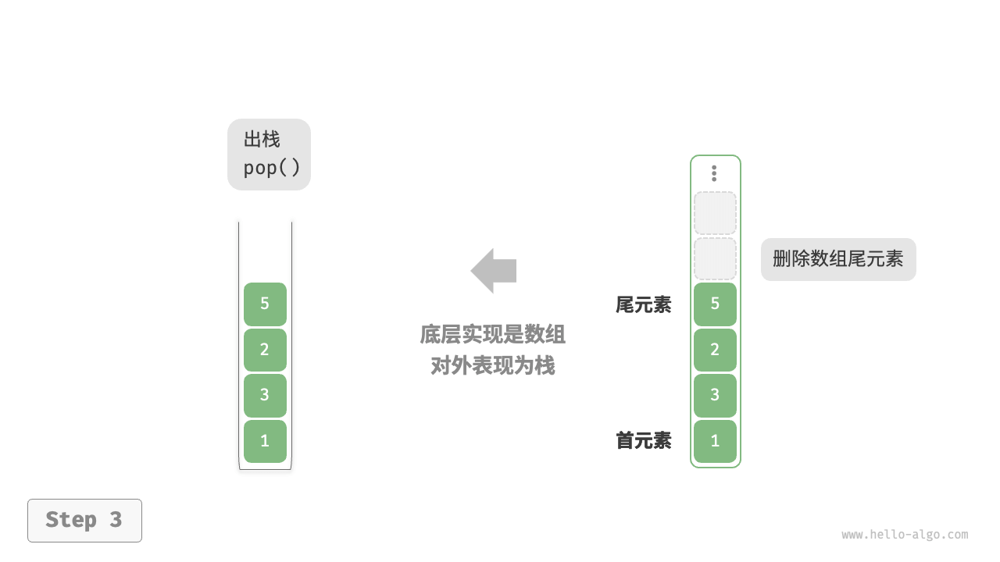

栈¶
栈（stack）是一种遵循先入后出逻辑的线性数据结构。
我们可以将栈类比为桌面上的一摞盘子，如果想取出底部的盘子，则需要先将上面的盘子依次移走。我们将盘子替换为各种类型的元素（如整数、字符、对象等），就得到了栈这种数据结构。
如下图所示，我们把堆叠元素的顶部称为“栈顶”，底部称为“栈底”。将把元素添加到栈顶的操作叫作“入栈”，删除栈顶元素的操作叫作“出栈”。

栈的常用操作¶
栈的常用操作如下表所示，具体的方法名需要根据所使用的编程语言来确定。在此，我们以常见的 push()、pop()、peek() 命名为例。
表
| 方法 | 描述 | 时间复杂度 |
|---|---|---|
push() |
元素入栈（添加至栈顶） | $O(1)$ |
pop() |
栈顶元素出栈 | $O(1)$ |
peek() |
访问栈顶元素 | $O(1)$ |
通常情况下，我们可以直接使用编程语言内置的栈类。然而，某些语言可能没有专门提供栈类，这时我们可以将该语言的“数组”或“链表”当作栈来使用，并在程序逻辑上忽略与栈无关的操作。
=== "Python"
```python title="stack.py"
# 初始化栈
# Python 没有内置的栈类，可以把 list 当作栈来使用
stack: list[int] = []
# 元素入栈
stack.append(1)
stack.append(3)
stack.append(2)
stack.append(5)
stack.append(4)
# 访问栈顶元素
peek: int = stack[-1]
# 元素出栈
pop: int = stack.pop()
# 获取栈的长度
size: int = len(stack)
# 判断是否为空
is_empty: bool = len(stack) == 0
```
=== "C++"
```cpp title="stack.cpp"
/* 初始化栈 */
stack<int> stack;
/* 元素入栈 */
stack.push(1);
stack.push(3);
stack.push(2);
stack.push(5);
stack.push(4);
/* 访问栈顶元素 */
int top = stack.top();
/* 元素出栈 */
stack.pop(); // 无返回值
/* 获取栈的长度 */
int size = stack.size();
/* 判断是否为空 */
bool empty = stack.empty();
```
=== "Java"
```java title="stack.java"
/* 初始化栈 */
Stack<Integer> stack = new Stack<>();
/* 元素入栈 */
stack.push(1);
stack.push(3);
stack.push(2);
stack.push(5);
stack.push(4);
/* 访问栈顶元素 */
int peek = stack.peek();
/* 元素出栈 */
int pop = stack.pop();
/* 获取栈的长度 */
int size = stack.size();
/* 判断是否为空 */
boolean isEmpty = stack.isEmpty();
```
=== "C#"
```csharp title="stack.cs"
/* 初始化栈 */
Stack<int> stack = new();
/* 元素入栈 */
stack.Push(1);
stack.Push(3);
stack.Push(2);
stack.Push(5);
stack.Push(4);
/* 访问栈顶元素 */
int peek = stack.Peek();
/* 元素出栈 */
int pop = stack.Pop();
/* 获取栈的长度 */
int size = stack.Count;
/* 判断是否为空 */
bool isEmpty = stack.Count == 0;
```
=== "Go"
```go title="stack_test.go"
/* 初始化栈 */
// 在 Go 中，推荐将 Slice 当作栈来使用
var stack []int
/* 元素入栈 */
stack = append(stack, 1)
stack = append(stack, 3)
stack = append(stack, 2)
stack = append(stack, 5)
stack = append(stack, 4)
/* 访问栈顶元素 */
peek := stack[len(stack)-1]
/* 元素出栈 */
pop := stack[len(stack)-1]
stack = stack[:len(stack)-1]
/* 获取栈的长度 */
size := len(stack)
/* 判断是否为空 */
isEmpty := len(stack) == 0
```
=== "Swift"
```swift title="stack.swift"
/* 初始化栈 */
// Swift 没有内置的栈类，可以把 Array 当作栈来使用
var stack: [Int] = []
/* 元素入栈 */
stack.append(1)
stack.append(3)
stack.append(2)
stack.append(5)
stack.append(4)
/* 访问栈顶元素 */
let peek = stack.last!
/* 元素出栈 */
let pop = stack.removeLast()
/* 获取栈的长度 */
let size = stack.count
/* 判断是否为空 */
let isEmpty = stack.isEmpty
```
=== "JS"
```javascript title="stack.js"
/* 初始化栈 */
// JavaScript 没有内置的栈类，可以把 Array 当作栈来使用
const stack = [];
/* 元素入栈 */
stack.push(1);
stack.push(3);
stack.push(2);
stack.push(5);
stack.push(4);
/* 访问栈顶元素 */
const peek = stack[stack.length-1];
/* 元素出栈 */
const pop = stack.pop();
/* 获取栈的长度 */
const size = stack.length;
/* 判断是否为空 */
const is_empty = stack.length === 0;
```
=== "TS"
```typescript title="stack.ts"
/* 初始化栈 */
// TypeScript 没有内置的栈类，可以把 Array 当作栈来使用
const stack: number[] = [];
/* 元素入栈 */
stack.push(1);
stack.push(3);
stack.push(2);
stack.push(5);
stack.push(4);
/* 访问栈顶元素 */
const peek = stack[stack.length - 1];
/* 元素出栈 */
const pop = stack.pop();
/* 获取栈的长度 */
const size = stack.length;
/* 判断是否为空 */
const is_empty = stack.length === 0;
```
=== "Dart"
```dart title="stack.dart"
/* 初始化栈 */
// Dart 没有内置的栈类，可以把 List 当作栈来使用
List<int> stack = [];
/* 元素入栈 */
stack.add(1);
stack.add(3);
stack.add(2);
stack.add(5);
stack.add(4);
/* 访问栈顶元素 */
int peek = stack.last;
/* 元素出栈 */
int pop = stack.removeLast();
/* 获取栈的长度 */
int size = stack.length;
/* 判断是否为空 */
bool isEmpty = stack.isEmpty;
```
=== "Rust"
```rust title="stack.rs"
/* 初始化栈 */
// 把 Vec 当作栈来使用
let mut stack: Vec<i32> = Vec::new();
/* 元素入栈 */
stack.push(1);
stack.push(3);
stack.push(2);
stack.push(5);
stack.push(4);
/* 访问栈顶元素 */
let top = stack.last().unwrap();
/* 元素出栈 */
let pop = stack.pop().unwrap();
/* 获取栈的长度 */
let size = stack.len();
/* 判断是否为空 */
let is_empty = stack.is_empty();
```
=== "C"
```c title="stack.c"
// C 未提供内置栈
```
=== "Kotlin"
```kotlin title="stack.kt"
/* 初始化栈 */
val stack = Stack<Int>()
/* 元素入栈 */
stack.push(1)
stack.push(3)
stack.push(2)
stack.push(5)
stack.push(4)
/* 访问栈顶元素 */
val peek = stack.peek()
/* 元素出栈 */
val pop = stack.pop()
/* 获取栈的长度 */
val size = stack.size
/* 判断是否为空 */
val isEmpty = stack.isEmpty()
```
=== "Ruby"
```ruby title="stack.rb"
# 初始化栈
# Ruby 没有内置的栈类，可以把 Array 当作栈来使用
stack = []
# 元素入栈
stack << 1
stack << 3
stack << 2
stack << 5
stack << 4
# 访问栈顶元素
peek = stack.last
# 元素出栈
pop = stack.pop
# 获取栈的长度
size = stack.length
# 判断是否为空
is_empty = stack.empty?
```
=== "Zig"
```zig title="stack.zig"
```
可视化运行
https://pythontutor.com/render.html#code=%22%22%22Driver%20Code%22%22%22%0Aif%20__name__%20%3D%3D%20%22__main__%22%3A%0A%20%20%20%20%23%20%E5%88%9D%E5%A7%8B%E5%8C%96%E6%A0%88%0A%20%20%20%20%23%20Python%20%E6%B2%A1%E6%9C%89%E5%86%85%E7%BD%AE%E7%9A%84%E6%A0%88%E7%B1%BB%EF%BC%8C%E5%8F%AF%E4%BB%A5%E6%8A%8A%20list%20%E5%BD%93%E4%BD%9C%E6%A0%88%E6%9D%A5%E4%BD%BF%E7%94%A8%0A%20%20%20%20stack%20%3D%20%5B%5D%0A%0A%20%20%20%20%23%20%E5%85%83%E7%B4%A0%E5%85%A5%E6%A0%88%0A%20%20%20%20stack.append%281%29%0A%20%20%20%20stack.append%283%29%0A%20%20%20%20stack.append%282%29%0A%20%20%20%20stack.append%285%29%0A%20%20%20%20stack.append%284%29%0A%20%20%20%20print%28%22%E6%A0%88%20stack%20%3D%22,%20stack%29%0A%0A%20%20%20%20%23%20%E8%AE%BF%E9%97%AE%E6%A0%88%E9%A1%B6%E5%85%83%E7%B4%A0%0A%20%20%20%20peek%20%3D%20stack%5B-1%5D%0A%20%20%20%20print%28%22%E6%A0%88%E9%A1%B6%E5%85%83%E7%B4%A0%20peek%20%3D%22,%20peek%29%0A%0A%20%20%20%20%23%20%E5%85%83%E7%B4%A0%E5%87%BA%E6%A0%88%0A%20%20%20%20pop%20%3D%20stack.pop%28%29%0A%20%20%20%20print%28%22%E5%87%BA%E6%A0%88%E5%85%83%E7%B4%A0%20pop%20%3D%22,%20pop%29%0A%20%20%20%20print%28%22%E5%87%BA%E6%A0%88%E5%90%8E%20stack%20%3D%22,%20stack%29%0A%0A%20%20%20%20%23%20%E8%8E%B7%E5%8F%96%E6%A0%88%E7%9A%84%E9%95%BF%E5%BA%A6%0A%20%20%20%20size%20%3D%20len%28stack%29%0A%20%20%20%20print%28%22%E6%A0%88%E7%9A%84%E9%95%BF%E5%BA%A6%20size%20%3D%22,%20size%29%0A%0A%20%20%20%20%23%20%E5%88%A4%E6%96%AD%E6%98%AF%E5%90%A6%E4%B8%BA%E7%A9%BA%0A%20%20%20%20is_empty%20%3D%20len%28stack%29%20%3D%3D%200%0A%20%20%20%20print%28%22%E6%A0%88%E6%98%AF%E5%90%A6%E4%B8%BA%E7%A9%BA%20%3D%22,%20is_empty%29&cumulative=false&curInstr=2&heapPrimitives=nevernest&mode=display&origin=opt-frontend.js&py=311&rawInputLstJSON=%5B%5D&textReferences=false
栈的实现¶
为了深入了解栈的运行机制，我们来尝试自己实现一个栈类。
栈遵循先入后出的原则，因此我们只能在栈顶添加或删除元素。然而，数组和链表都可以在任意位置添加和删除元素，因此栈可以视为一种受限制的数组或链表。换句话说，我们可以“屏蔽”数组或链表的部分无关操作，使其对外表现的逻辑符合栈的特性。
基于链表的实现¶
使用链表实现栈时，我们可以将链表的头节点视为栈顶，尾节点视为栈底。
如下图所示，对于入栈操作，我们只需将元素插入链表头部，这种节点插入方法被称为“头插法”。而对于出栈操作，只需将头节点从链表中删除即可。
{kind=link}
=== "push()"

=== "pop()"

以下是基于链表实现栈的示例代码：
[file]{linkedlist_stack}-[class]{linked_list_stack}-[func]{}
基于数组的实现¶
使用数组实现栈时，我们可以将数组的尾部作为栈顶。如下图所示，入栈与出栈操作分别对应在数组尾部添加元素与删除元素，时间复杂度都为 $O(1)$ 。
=== "ArrayStack" 
{kind=link}
=== "push()" 
{kind=link}
=== "pop()" 
{kind=link}
由于入栈的元素可能会源源不断地增加，因此我们可以使用动态数组，这样就无须自行处理数组扩容问题。以下为示例代码：
[file]{array_stack}-[class]{array_stack}-[func]{}
两种实现对比¶
支持操作
两种实现都支持栈定义中的各项操作。数组实现额外支持随机访问，但这已超出了栈的定义范畴，因此一般不会用到。
时间效率
在基于数组的实现中，入栈和出栈操作都在预先分配好的连续内存中进行，具有很好的缓存本地性，因此效率较高。然而，如果入栈时超出数组容量，会触发扩容机制，导致该次入栈操作的时间复杂度变为 $O(n)$ 。
在基于链表的实现中，链表的扩容非常灵活，不存在上述数组扩容时效率降低的问题。但是，入栈操作需要初始化节点对象并修改指针，因此效率相对较低。不过，如果入栈元素本身就是节点对象，那么可以省去初始化步骤，从而提高效率。
综上所述，当入栈与出栈操作的元素是基本数据类型时，例如 int 或 double ，我们可以得出以下结论。
- 基于数组实现的栈在触发扩容时效率会降低，但由于扩容是低频操作，因此平均效率更高。
- 基于链表实现的栈可以提供更加稳定的效率表现。
空间效率
在初始化列表时，系统会为列表分配“初始容量”，该容量可能超出实际需求；并且，扩容机制通常是按照特定倍率（例如 2 倍）进行扩容的，扩容后的容量也可能超出实际需求。因此，基于数组实现的栈可能造成一定的空间浪费。
然而，由于链表节点需要额外存储指针，因此链表节点占用的空间相对较大。
综上，我们不能简单地确定哪种实现更加节省内存，需要针对具体情况进行分析。
栈的典型应用¶
- 浏览器中的后退与前进、软件中的撤销与反撤销。每当我们打开新的网页，浏览器就会对上一个网页执行入栈，这样我们就可以通过后退操作回到上一个网页。后退操作实际上是在执行出栈。如果要同时支持后退和前进，那么需要两个栈来配合实现。
- 程序内存管理。每次调用函数时，系统都会在栈顶添加一个栈帧，用于记录函数的上下文信息。在递归函数中，向下递推阶段会不断执行入栈操作，而向上回溯阶段则会不断执行出栈操作。